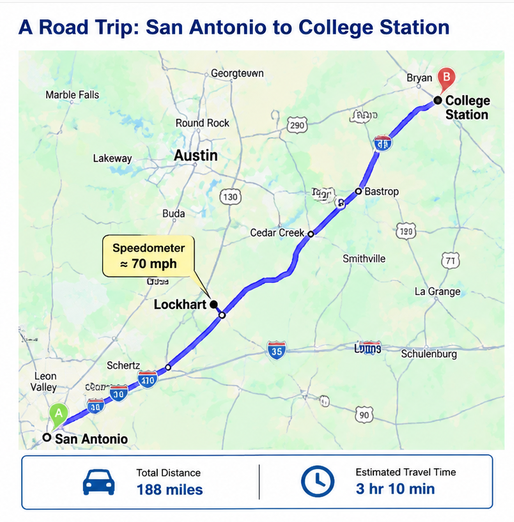

Interactive Exploration: What is a Derivative?
1 Motivation
Derivatives show up at many places in our routine day to day life. For example, whenever you look at the speedometer of your vehicle, you are looking at the value of the derivative of your distance with respect to that time. Let us first conceptually explore the idea, before we dig into the mathematics of it.
2 Think Before You Explore

Figure 4.1. Route from San Antonio to College Station.
You are driving from Texas A&M University–San Antonio to Texas A&M University College Station. The distance is 188 miles and the approximate travel time is 3h 10 m (3.167 hours). Suppose that near Lockhart, Texas, your speedometer reads 70 mph. Based on this information, try and answer the following questions:
Question 1
Estimate your average speed for the entire trip.
(Hint: Average speed = Distance ÷ Time)
Show Answer
The trip takes
\[ 3+\frac{10}{60}=3.167 \text{ hr} \]
Therefore,
\[ \frac{188}{3.167} \approx59.4 \text{ mph} \]
So the average speed is approximately 59 mph.
Question 2
Your speedometer reads 70 mph near Lockhart.
What does this number represent?
- Instantaneous speed
- Average speed
- Both
Show Answer
The speedometer measures your instantaneous speed—how fast you are traveling right now.
It does not measure your average speed for the entire trip.
Question 3
Suppose your speedometer continues to read 70 mph for the next minute.
Can you determine exactly when you will arrive in College Station?
Show Answer
No.
Knowing your speed at one instant tells you very little about the remainder of the trip.
Traffic, construction, speed limits, weather, and future stops will all affect your arrival time.
Instantaneous speed cannot determine your average speed for the entire trip.
3 Conceptual Definition of a Derivative
A derivative tells us how the slope of a function changes at any given point. In most cases, we cannot precisely measure this. Therefore, we measure it by seeing how the function changes when we move slightly from that point.
4 Mathematical Definition of a Derivative
Consider a function f(x). Now, we want to find the derivative at a point x = a. We can compute f(a). This tells us the value of the function at x = a but not its slope. To obtain the slope at that point, we take take another point close by (a + h) and compute the following:
\[ f'(a) = \left.\frac{df}{dx}\right|_{x=a} = \lim_{h \to 0} \frac{f(a+h)-f(a)}{h} \]
In other words we want to calculate the instantaneous change of f(x) for a small change in x at any given point where x = a.
5 Why do we Study Derivatives?
Derivatives help us understand many things such as changes in temperature and how it impacts our body (when you get a fever, your body temperature has instantaneously changed to a higher value and as a result you feel sick). It also helps us understand how your speedometer in your car tell us the instantaneous velocity (say 30 mph) and how you can use your steering and brakes to change to another value to either move quickly or slowly. A flood gage tells you how the river height changes over time in response to rainfall and heat. Look around and you will see how calculus helps us think about changes of one variable and how it impacts something that depends on it.
6 Exploratory Example
In this example you will understand how the derivative changes with time in a rollercoaster. When the derivative (or the instantaneous slope) is negative you will feel the push towards the ground due to gravity, while the slope is positive you will feel the pull away from the ground. Roller coasters suddenly change the instaneous slopes,(both direction and magnitude), or derivatives to create thrill!!
Instructions
- Move the sliders and answer the questions below.
Use the interactive notebook to explore how the derivative changes over time in a roller coaster.
7 Summary
In this activity you discovered that
- A derivative measures change.
- The derivative depends on where you are on the graph.
- The tangent line gives the instantaneous rate of change.
- A derivative has physical meaning—in this example, it represents velocity.
8 Check Your Understanding
Question 1
Explanation: The derivative measures how rapidly position is changing at one specific instant in time. It is the instantaneous speed (or velocity).
Question 2
Explanation: Average speed is computed over a time interval. Instantaneous speed is obtained by taking the derivative.
Question 3
Explanation: The derivative is defined as the limit of the average rate of change as the time interval approaches zero.
Question 4
Explanation: A derivative of zero means the tangent line has zero slope. The function value itself does not have to be zero.
Question 5
Explanation: At the highest point, the tangent to the height curve is horizontal, so the derivative is approximately zero even though the coaster continues moving forward.